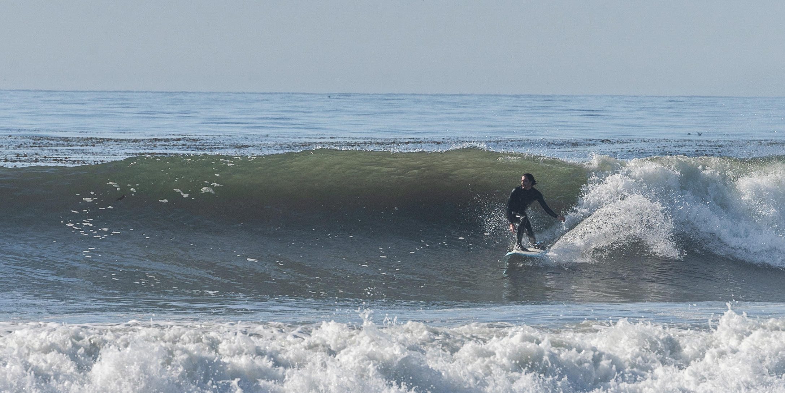

/
 /
/
Eye movement
This simple program renders a pair of eyes which follow the curser around the browser window. Click below to see for yourself!
PacMan
Another fun and simple program that lets the user create several PacMen and sends them running about the browser. this is an ecample of some basic edge detection and animation, enjoy!
Bus Tracker
Ah the bus tracker, this project has been a thorn in my side but rest assured it will be fully functional soon. This exercise focuses on using real time positional data as well as API sourced mapping data.